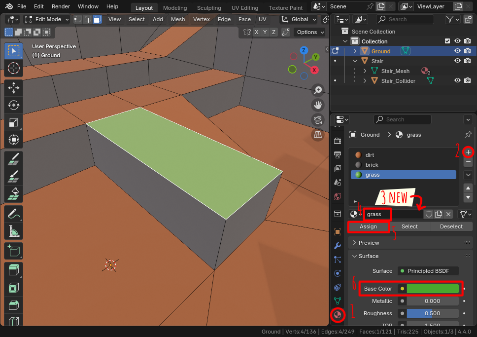
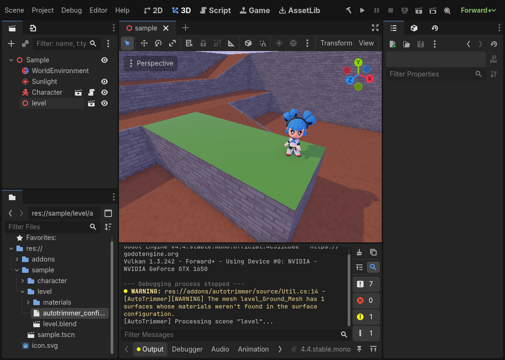
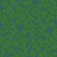
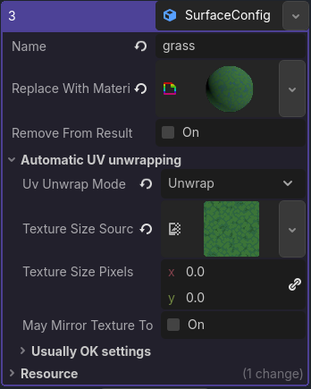
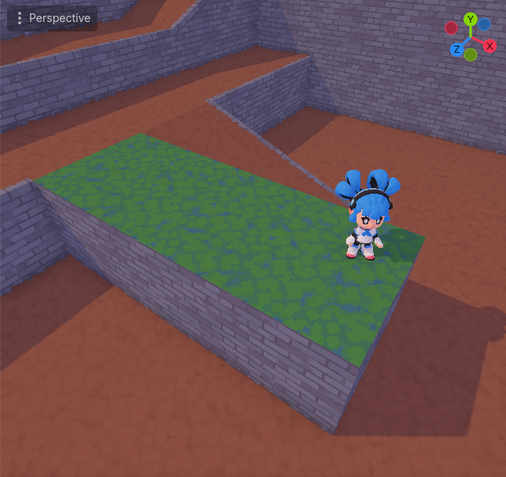
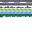
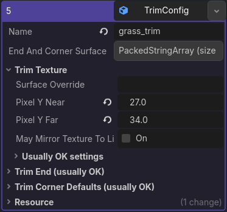
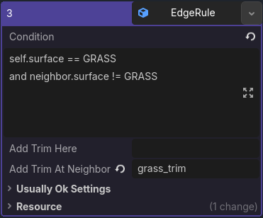
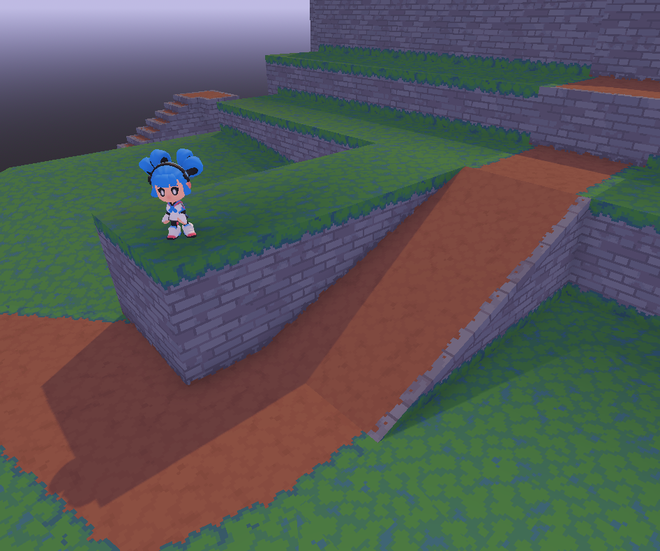

Tutorial 2: Let's Add Some Grass
The sample scene looks a little dreary with just bricks and dirt. We can add some grass to make it more lively.
In this tutorial, I'll teach you all about editing an AutoTrimmer rulebook. A rulebook contains all of the settings and rules that AutoTrimmer needs to decorate your 3D model.
You can continue on from the end of the first tutorial.
Adding a new grass surface
In this section, we'll add a new grass surface without any trims (decorative edges) yet. It's going to look pretty so-so by the end of this section, but it's going to start looking a lot better once we add the trims.
-
Go to Blender and open up edit mode for the main level mesh.
-
Select a face of the 3D model that you'd like to turn into grass.
-
Create a new Blender material for the grass. This involves a couple of steps, use the screenshot below to follow along:
- Go to the material settings (its icon looks like a red beach ball)
- Add a new material slot with the
+button. - Create a new material for the material slot,
by clicking
New. - Rename the material to “grass”. The name of the material is very important when working with AutoTrimmer! Pay attention to capital letters and small letters. Later on you're going to have to type this name into the rulebook, and even the capitals will have to match exactly or it won't work.
- Now assign the new grass material to at least one face.
- Give the grass a green color. This helps to make it easier to recognize in Blender.
- Save the file and we'll go back to Godot.

-
Back in Godot, our grass is looking exactly like it did in Blender: Very green and not very textured. Also notice that there's a warning in the “Output” window: AutoTrimmer is telling us that it didn't recognize the grass material. We're first going to need a texture for our grass, but then we'll get right back to Godot and get rid of the warning.

-
We'll need a grass texture next. You can make your own if you want. I made one which you can find below. It's not a great texture, but it will do. You can also swap out the textures later if you want.
-
Here's my texture. Right click on it and select “save as”. Download it and move it into the sample project's textures folder (you can find the textures in
AutoTrimmer/sample/level/materials/textures).
-
-
To use this texture in Godot, we will also need a Godot material. We'll use the same shader that the brick and dirt materials already use.
- In Godot, open up the folder
sample/level/materialsand duplicate eithertiling_brick.tresortiling_dirt.tres(right click on one of the files, then click “Duplicate”). Give the new file the nametiling_grass.tres. - Double-click the new
tiling_grass.tres, unfoldShader Parameterson the right, and changeMain Textureto the grass texture. - Just now, when you put the texture in the material,
you probably received a notification from Godot that it changed the
texture's import settings because it's being used in 3D.
What it did was configure the texture to use compression.
The problem is that this compression will often worsen your pixel art
for not a lot of memory savings.
To disable texture compression, double click
tiling_grass.png, and in the import settings (on the top left), change “VRAM Compressed” to “VRAM Uncompressed”.
- In Godot, open up the folder
-
Now, let's add the grass surface to AutoTrimmer.
-
In the folder
sample/level, double click onrulebook.tres. This file contains all of the settings and rules that AutoTrimmer will use to decorate your 3D model. If you want an explanation for the settings that you find in the rulebook, check the rulebook documentation. The documentation is written to be pretty easy to understand. -
Unfold
surfacesand click on theArraybutton. You'll see the list of surfaces that AutoTrimmer knows about right now. At the moment, there's three surfaces: Dirt, brick and “trims”. The dirt and brick surface are based on the 3D model. The “trims” surface does not appear in the original 3D model, but will get added by AutoTrimmer when it processes the file. It has all the trims (edge decorations). -
Click
Add element(below the list of surfaces) and add aNew SurfaceConfiginto the empty slot that appears. Click onSurfaceConfigto open up the surface settings. -
You need to adjust the following settings:
-
Set “Name” to “grass”. This must match the material name in Blender exactly, or AutoTrimmer won't recognize it. Capital letters matter!
-
For “Replace with material”, click on the dropdown and select
Quick Load.... Find and use the materialtiling_grass.tres. -
Set “UV unwrap mode” to “unwrap”. This basically makes the textures appear correctly. For more information on what this does, check the documentation for “UV unwrap mode”.
-
Lastly set “Texture size source” to the grass texture.
AutoTrimmer uses a surface's texture size to determine how often the texture should tile. By setting “texture size source” instead of “texture size pixels”, it will automatically derive the texture size from the image that you give it. That's useful because you'll be able to overwrite the image with one that's bigger later, without having to touch the rulebook (I use this in the early stages of making a rulebook because making big textures takes a while).

-
-
Now that we've configured the grass surface, AutoTrimmer should recognize it the next time that it processes the 3D model. To make AutoTrimmer process the 3D model immediately, right click on
level.blendin Godot, and click “Reimport”.
-
You should see a patch of grass now. I have to admit: My grass texture isn't that great, but we should always strive do the best we can with the art skills we have. Even with my limited grass-drawing skills, it's going to look a lot nicer when we add the trims.

Adding a decorative edge around the grass
Alright, time to make it look somewhat good. We're adding a new grass trim that's going to droop over walls. It's also going to function as a nicer transition between grass and dirt.
If grass is at the bottom of a wall, this new trim is also going to climb up the wall a little bit. That's going to look kind of OK but also a little weird. If I was making a bigger project out of this, I'd probably make a separate trim for that, but it's a tutorial, so we're keeping it simple.
-
Here's a new trim texture.
- Download it just like before.
- Overwrite the old
trims.pngin the textures folder with this one. - You'll notice, after overwriting it, that the trims all look broken when opening Godot. That's actually not a problem, just reimport the mesh and AutoTrimmer will fix it. What happened is that the new texture is bigger than the old one, so it needed new texture coordinates. AutoTrimmer gave it new texture coordinates while processing the mesh.

-
Add the trim to the rulebook.
- Open up the rulebook as before.
- Unfold the
trimssection and open up theTrimsarray. We won't be using trim corners or trim groups in this tutorial. Only trims. Check the rulebook documentation later if you want to learn more about trim corners and trim groups. - Add a new trim. Here's the settings you'll need to adjust on the newly
added TrimConfig:
- Change its name to “grass_trim”.
- Change “pixel y near” to 27 and “pixel y far” to 34. These options are pretty important. They determine where in the trimsheet (trim texture), we can find this trim. There's a more in-depth explanation in the documentation.
- Save your changes to the rulebook by pressing
ctrl + S. - AutoTrimmer now knows about the trim “grass_trim”, but we haven't told it to place the new trim anywhere yet. To tell AutoTrimmer where it needs to add the trim, we'll need to add an edge rule.

-
Add an edge rule.
-
Unfold
rulesand create a new edge rule. -
In the new edge rule, set “add trim at neighbor” to “grass_trim”. This way, when the condition is met, AutoTrimmer will add a grass trim to the edge.
-
For “condition”, paste in the following code:
self.surface == GRASS and neighbor.surface != GRASSThis is going to add the grass trim to all edges between a grass surface and a non-grass surface. In the code, the name of our surface “grass” is turned into “GRASS”, in UPPER_SNAKE_CASE.
You don't need to understand the code for edge rules well to be able to use AutoTrimmer productively. There's a recipe book, which gives you examples that you can more or less just paste into your rulebook.

-
-
Save your changes to the rulebook by pressing
ctrl + S, then reimportlevel.blendto see the changes. You should now have some grassy trims.
That's the end of this tutorial. If you want, you can mess around with the level a little and try out the grass surface that you just put together.
Optional: Adding another trim for grass at the bottom of a wall.
The current trim texture looks OK for grass drooping over a wall, but in my opinion it's as good for grass at the bottom of a wall. It would look a lot better to use a separate trim for that.
If you want, you can try creating your own grass trim as practice.
For the new trim you'll need a new edge rule. Try this one:
self.surface == GRASS
and neighbor.surface != GRASS
and angle < -40
This rule will add the new trim to all edges between a grass surface and a non-grass surface, but only when the corner is more than 40° concave. This makes the grass trim only show up in the corners where it will be at the bottom of a wall.
Now, you can either place the new edge rule before the old grass edge rule (which will make the new rule evaluate first, which means it will take up all the spots where it can fit), or you can replace the old rule with this one:
self.surface == GRASS
and neighbor.surface != GRASS
and angle >= -40